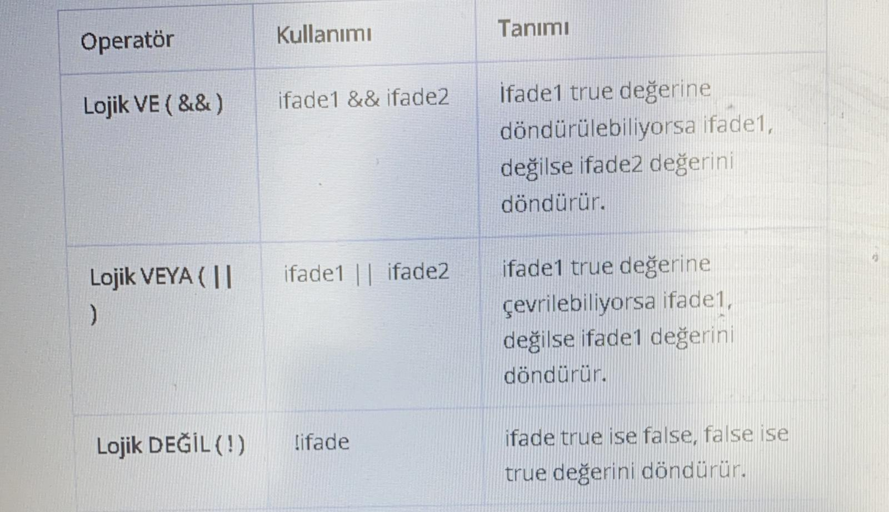
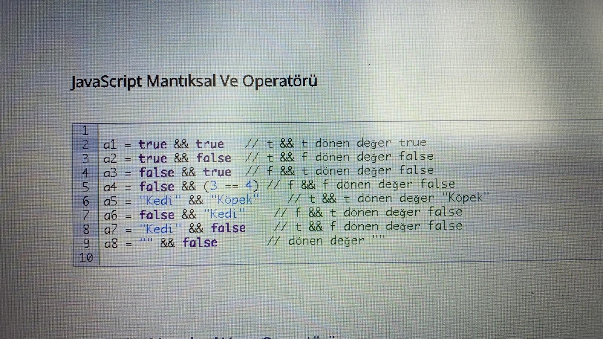
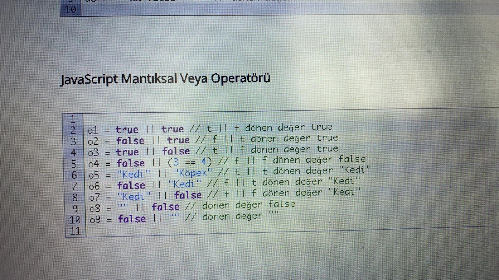
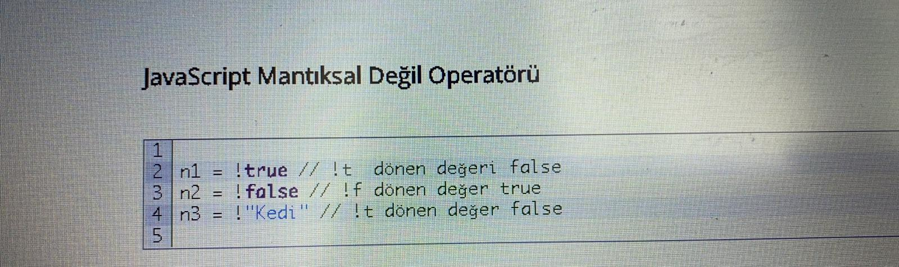
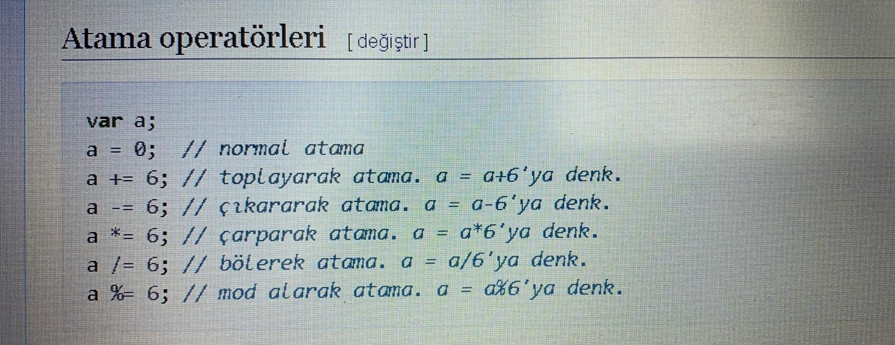

Operatörler programlamada aritmetik, mantıksal ve karşılaştırma işlemlerini yapmak için kullanılır.
Dört temel operatör vardır. Bunlar;
Aritmetik operatörler
Karşılaştırma operatörleri
Mantıksal operatörler
Birleşik atama operatörleri
Artırma-Azaltma Operatörleri
Biz bu dersimizde aritmetik operatörleri ele alacağız. Diğer operatörleri sonraki derslerimizde bulabilirsiniz.
Aritmetik Operatörler;
Aritmetik operatörler matematiksel dört işlemleri yapmak için kullanılır. Yani değişkenler arasında toplama, çıkarma, çarpma ve bölme gibi işlemler yapmak için aritmetik operatörleri kullanırız.
6 Adet aritmetik operatör mevcuttur. Bunlar;
Atama operatörü
Toplama operatörü
Çıkarma operatörü
Çarpma operatörü
Bölme operatörü
Mod operatörü
Şimdi dilerseniz bu operatörleri inceleyelim;
Javascript Karşılaştırma Operatörleri
Karşılaştırma operatörleri iki değerin birbiri arasındaki eşitliğini karşılaştırmak için kullanılırlar. Sonuç olarak True (doğru) ve False (yanlış) olmak üzere iki farklı değer döndürür. Genellikle bir sonraki dersimizde ele alacağımız kontrol yapılarında ve döngülerde kullanılırlar.
6 Adet karşılaştırma operatörümüz vardır. Bunlar;
Eşittir operatörü “==”
Büyüktür operatörü “>”
Küçüktür operatörü “<“
Büyük ya da Eşittir operatörü “>=”
Küçük ya da Eşittir operatörü “<=”
Eşit Değildir opratörü “!=”
MANTIKSALOPERATÖRLER

JavaScriptte bir değer true olarak dönüştürülebilirse mantıksal işlemlerde true olarak kullanılır.
Aşağıdaki ifadeler mantıksal olarak dönüştürülürken false olarak dönüştürülmektedir.
null;
NaN;
0;
empty string (“”);
undefined



BİRLEŞİK ATAMA
